7045A86 (One), front SEAT FRAME left or right - R.R.
- Path
- Procedures > 70 FITTINGS > 7045 FRONT SEATS > 7045A front seat assembly > 7045A86 (One), front SEAT FRAME left or right - R.R.
- Kind
- repair procedure (removal / refitting; the operation number is the code)
- Applies to
- all engines; all production periods
- Interactive page
- https://sloeber94.github.io/elrnDB-a147/en/#/3025857
Applies to: all engines; all production periods
 Removing
Removing
 Refitting
Refitting7045A43 seat exterior guard - r r
7045A44 seat interior guard - r r
1. Working under the seat, disconnect the retaining bands from the cable for the seat belt anchor link.
2. Disconnect the side bag wiring retaining bands.
3. Undo retainer (3a) and turn connector carrier bracket (3b) to an accessible position.
4. Disconnect the heat pad retainer from the rail-type retainer.
5. Disconnect the wiring from the retainer.
6. Undo the cushion bolts.
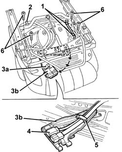
Applies to: all engines; all production periods
1. Disconnect the two bottom ends of the squab cover, hooked onto each other.
2. Raise the trim slightly
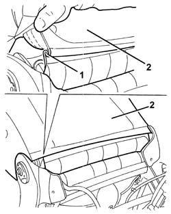
Applies to: all engines; all production periods
1. Disconnect the electrical connection for the squab heater pad.
2. Remove the cushion.
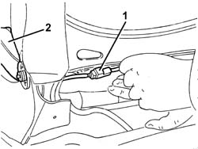
Applies to: all engines; all production periods
1. Prise up the entire cushion trim (1a) around the edge; Use a screwdriver with a blade of appropriate size (1b) to open the groove (1c) and disengage the cover profile (1d).
2. Remove the steel seat base.
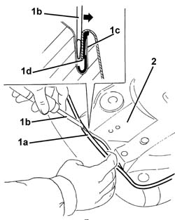
Applies to: all engines; all production periods
1. Fold the seat over and use cutters to cut the top hooks securing the cushion cover to the padding.
2. Remove the cover from the padding.
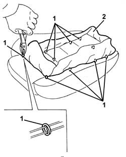
Applies to: all engines; all production periods
Refitting
RemovingCheck that the cover is undamaged.
Fit the trim on the padding.
Clip on the top retaining hooks.
Position the cushion on the seat base.
Check the condition of the upholstery and the heater pad.
1. Fit the cover surround, starting from the central front area.
2. Beat in the groove using a rubber hammer.
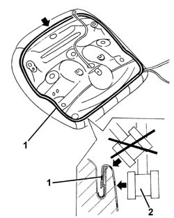
Applies to: all engines; all production periods
Mould the cover onto the padding.
Fit the cushion on the seat.
Connect the squab heat pad electrical connection.
Do up the two lower ends of the squab trim.
Tighten the bolts securing the cushion to the seat.
 | Fastening | Component | Ø | Value (daNm) |
|---|---|---|---|---|
- | Bolt | FRONT SEAT CUSHION | M8 | 2.4 |
Position the heat pad wiring in its seat and do up the rail-type retainer.
Turn the connector carrier bracket in its seat and engage its retainer.
Connect the side bag wiring retaining band.
Connect the seat belt anchorage link wiring retaining bands.
7045A44 seat interior guard - r r
Applies to: all engines; all production periods; only with equipment: GTA
Removing
Refitting7045A43 seat exterior guard - r r
7045A44 seat interior guard - r r
1. Working under the seat, disconnect the retaining bands from the cable for the seat belt anchor link.
2. Disconnect the side air bag wiring retaining band.
3. Undo the cushion bolts.
4. Remove the cushion from the seat.
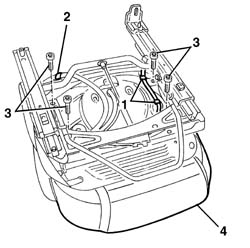
Applies to: all engines; all production periods; only with equipment: GTA
1. Release the rear edge (1a) of the cushion cover from the metal structure retainer (1b).
2. Release the cushion cover surround (2a); use a suitable size screwdriver (2b) to open the duct (2c). Extract the profile (2d) for the cover releasing it from the retainers (2e).
3. Release the upholstery retainer.
4. Remove the steel seat base.
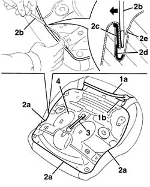
Applies to: all engines; all production periods; only with equipment: GTA
1. Fold the seat over and release the perimeter edges (1a) of the seat upholstery cover (1b).
2. Using cutters, cut the top retaining hooks on the cushion cover.
3. Separate the cover (3a) from the upholstery, releasing it from the strips of velcro (3b).
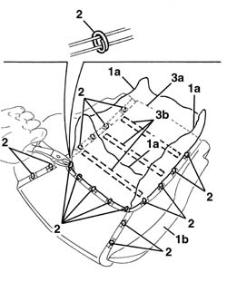
Applies to: all engines; all production periods; only with equipment: GTA
Refitting
RemovingCheck that the cover is undamaged.
Fit the trim on the padding.
Connect the cover to the upholstery attaching the strips of velcro.
Clip on the top retaining hooks.
1. Working on the base of the seat using a mallet (1a), shape the edge (1b) of the seat cover retaining duct; if necessary, restore the retainers (1c) to their correct position.
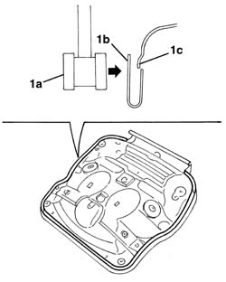
Applies to: all engines; all production periods; only with equipment: GTA
1. Position the upholstery and cover (1a) on the seat base (1b).
2. Fit the perimeter edges of the cushion cover on the upholstery.
3. Attach the perimeter profile of the cover to the duct. Mould the cover onto the padding.
4. Attach the upholstery retainer.
5. Attach the rear edge of the cushion cover (5a) to the metal structure retainer (5b).
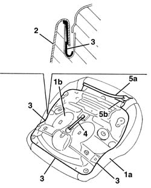
Applies to: all engines; all production periods; only with equipment: GTA
Fit the cushion on the seat.
Tighten the bolts securing the cushion to the seat.
Connect the side bag wiring retaining band.
Connect the seat belt anchorage link wiring retaining bands.
7045A44 seat interior guard - r r
Topics linked from this page (3)
Topics that link to this page (6)
- 7045A87 Front seat CUSHION COVER, left or right - R.R .
- 7045A90 Front seat CUSHION UPHOLSTERY, left or right - R.R. with seat removed
- 7045A91 Front seat, CUSHION UPHOLSTERY left or right - R.R.
- 7045A92 Front seat COVER, left or right - R.R. with seat removed
- 7045A93 Front seat TRIM, left or right - R.R .
- 7045M22 l/h or r/h front seat cushion heat pad - r+r following electrical wiring check